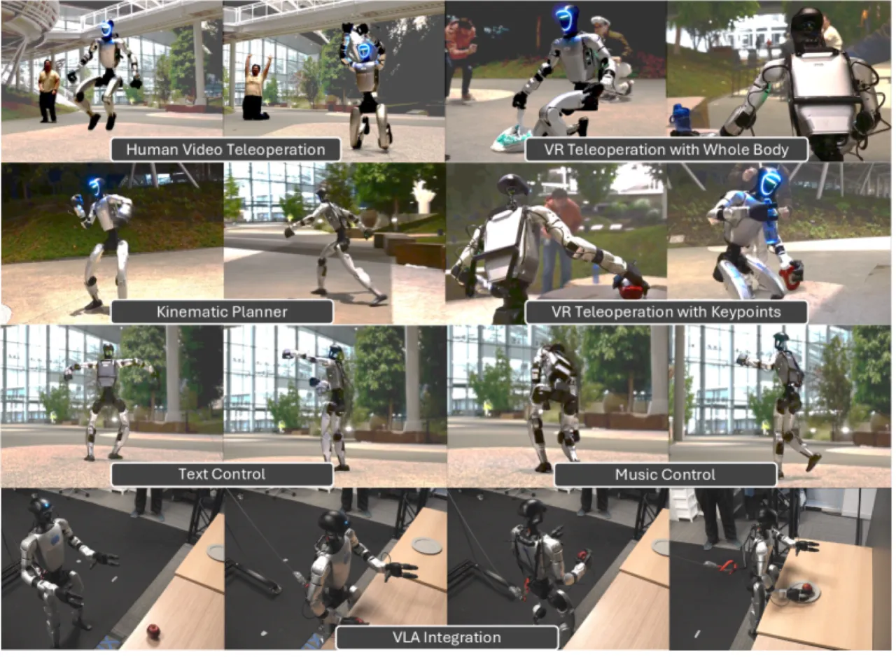
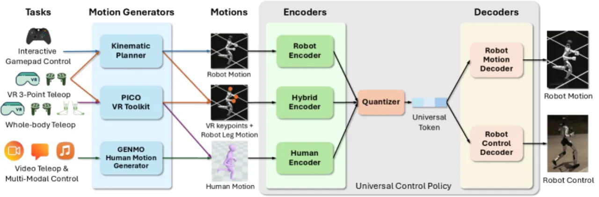
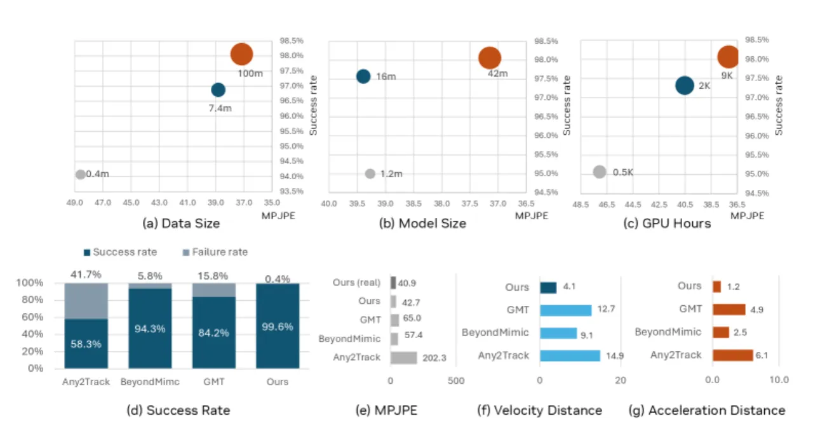
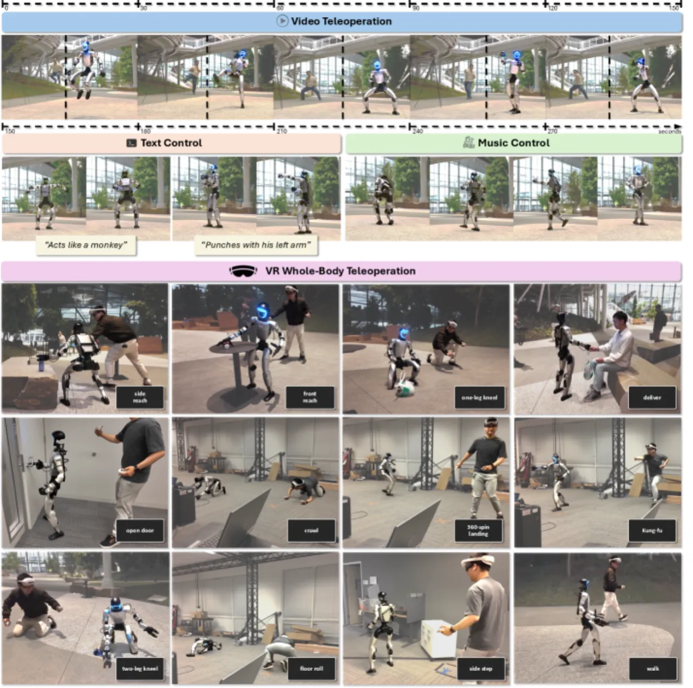
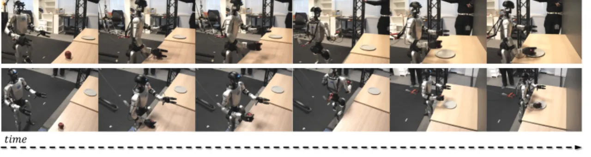

SONIC 将 motion tracking 定位为 humanoid 控制的核心可扩展任务，通过同时放大网络规模、数据量和计算量，训练出能够自然、稳健地执行全身运动的基础模型。 系统核心是一个统一 token 空间（unified token space），将机器人运动、人体运动和混合运动统一编码，支持 VR teleoperation、视频遥控、VLA 模型等多种控制接口。
大语言模型已证明"规模即能力"，但 humanoid 控制领域至今未能复现这一增益：现有神经控制器参数规模有限、行为种类单一、训练资源匮乏。 SONIC 的出发点正是弥合这一差距——证明在 humanoid 控制上同样存在清晰的 scaling law。
"Despite the rise of billion-parameter foundation models trained across thousands of GPUs, similar scaling gains have not been shown for humanoid control. Current neural controllers for humanoids remain modest in size, target a limited set of behaviors, and are trained on a handful of GPUs."

Motion tracking 天然适合 scaling：运动捕捉数据提供密集的监督信号，无需手工设计奖励函数；多样化数据集隐式赋予策略人体运动先验（human motion prior）。 SONIC 同时在三个维度上扩展：网络容量（1.2M → 42M 参数）、数据量（100M+ 帧，700 小时高质量 mocap）、计算量（21,000 GPU 小时）。
SONIC 的核心是一个编解码框架，配备三种专用编码器，将异构控制信号（机器人关节、人体 SMPL 关节、稀疏关键点）统一映射到共享 latent 空间， 再经 Finite Scalar Quantization（FSQ）量化为 universal token，最终由统一解码器输出 29 维关节位置目标。

三条编码器各有分工：
所有编码器通过多层感知机（隐藏层：[2048, 1024, 512, 512]）映射至共享 latent，经 FSQ 量化为 universal token。 辅助重建解码器 𝒟r 重建机器人运动，隐式实现 human-to-robot retargeting 与特征对齐。
训练损失由四项组成：
为将 motion tracking 能力桥接到实际任务（如导航），SONIC 额外引入实时运动规划器：在标准笔记本上延迟 <5 ms，在 Jetson Orin GPU 上 12 ms； 每 100 ms 或接到新指令时重新规划；每段运动时长 0.8–2.4s 自动确定。速度指令范围 0.0–6.0 m/s，支持 0–360° 任意方向。
训练使用 4,096 个并行环境/GPU，每环境 24 步，5 epochs，actor 学习率 2×10-5。 领域随机化涵盖摩擦系数（μs: 0.3–1.6，μa: 0.3–1.2）、质心偏移、外力扰动和运动扰动。 数据采用自适应运动采样（Adaptive Motion Sampling），以失败率为权重（β=200，混合参数 α=0.1）动态分配训练难度。
评测基准：9 小时重新定向的 AMASS 数据（1,602 条轨迹），规模显著大于此前工作。 核心指标：轨迹成功率 + MPJPE（Mean Per-Joint Position Error，mm）。 基线方法：Any2Track、BeyondMimic、GMT。
SONIC 在三个维度上均呈现单调性能提升：网络规模（1.2M → 42M 参数）、数据量（到 100M+ 帧）、计算量（到 21k GPU 小时）， 其中数据多样性带来的增益最为显著。性能随计算量稳定提升，表明 motion tracking 具备良好的 scaling law 特性。

| 指标 | 结果 | 说明 |
|---|---|---|
| 真实世界 50 条轨迹成功率 | 100% | 涵盖舞蹈、跳跃、移动操作 |
| 超越基线 | 全部指标 | vs. Any2Track, BeyondMimic, GMT：成功率 + MPJPE 均优 |
| 策略泛化 | 通过 | 可泛化到训练集外的未见运动 |
| 指标 | 均值 | 95th 百分位 |
|---|---|---|
| 端到端延迟 | 121.9 ms | — |
| 右腕位置误差 | 6 cm | 13.3 cm |
| 右腕朝向误差 | 0.145 rad (8.32°) | 0.267 rad (15.31°) |
| 采集 demonstration | 300 条 | 用于下游 VLA 微调 |

在 VR teleoperation 采集的 300 条轨迹上微调 GR00T N1.5 视觉-语言-动作模型（vision-language-action model）， 然后通过 unified token space 直接将 VLA 输出的运动指令送入 SONIC 控制器，无需任何额外适配器。

消融验证了 unified token space 各组件的必要性：去掉 ℒtoken 对齐损失后，跨 embodiment 跟踪精度显著下降； 去掉 ℒcycle 循环一致性损失后，模态转换保真度下降。数据规模是 scaling 的最大贡献因素（文中明确指出"dataset size providing the most substantial gains"）。
论文原文指出："formal treatment of safety, compliance, and energy efficiency for extended deployments" 是尚待解决的问题。 当前系统在长期部署场景中的安全边界和能耗表现尚不明确。
作者明确提及"combating noisy input during deployments"是待解决的挑战。 视频遥控路径下，实时姿态估计（≥60 fps）在光照、遮挡等不利条件下的鲁棒性仍有改善空间。
论文将"exploring joint training of planner, tokenizers, and policy to reduce modality gaps"列为未来工作， 说明当前分阶段训练管线存在模态对齐误差的累积问题。
当前 scaling 实验在单一机器人平台（Unitree H1）上进行。跨机器人体型（embodiment morphology）的 scaling 规律是否成立，论文尚未验证。 作者将"scaling laws across more diverse datasets"列为未来方向。